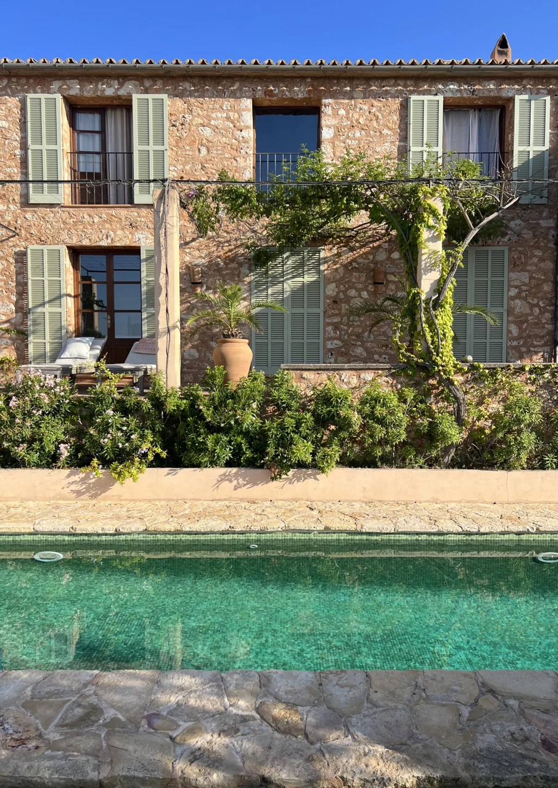
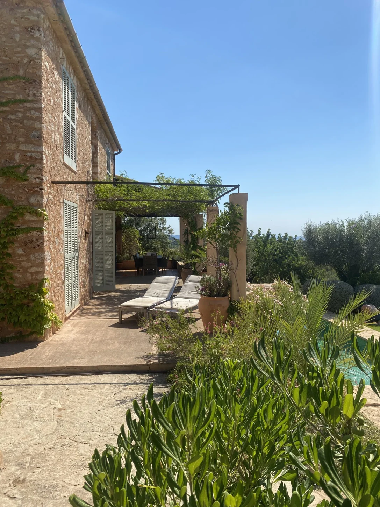
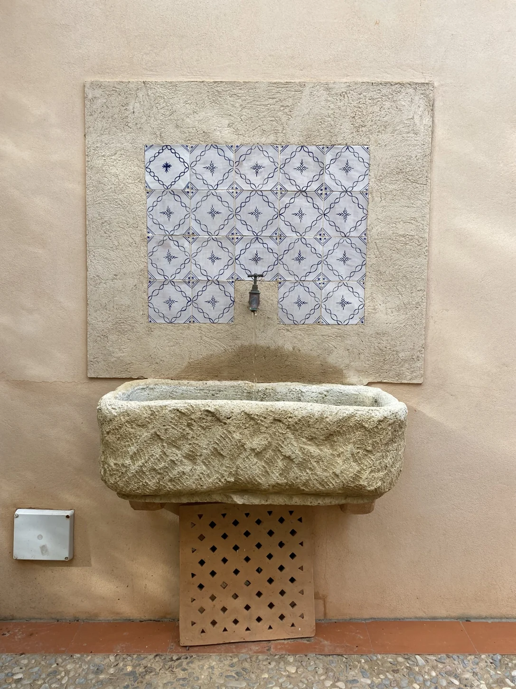
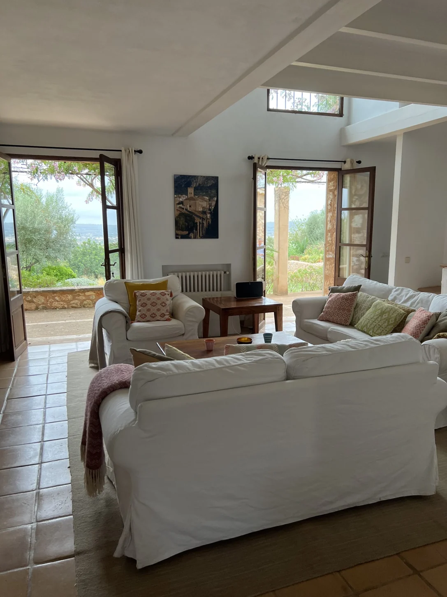
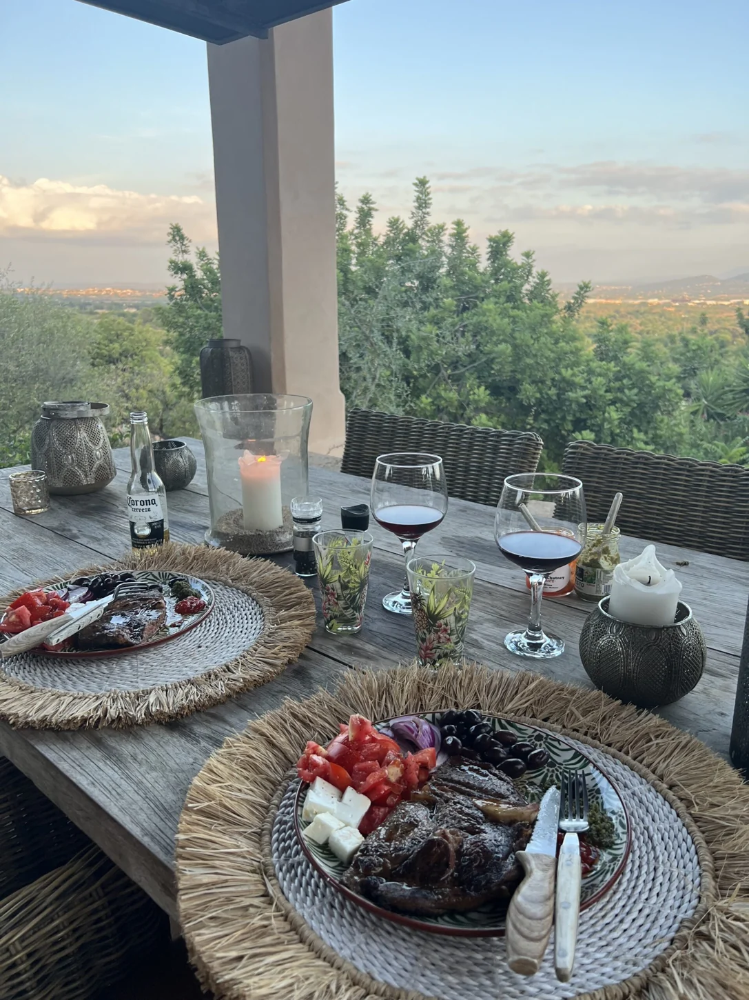
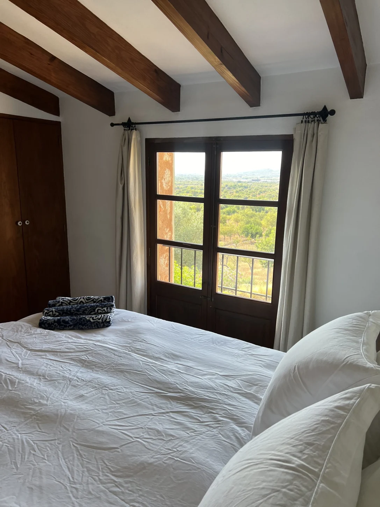
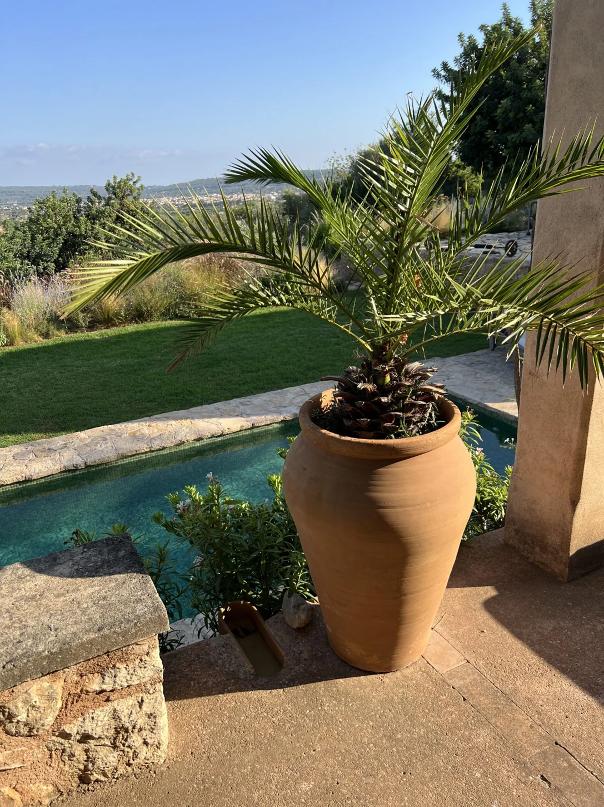
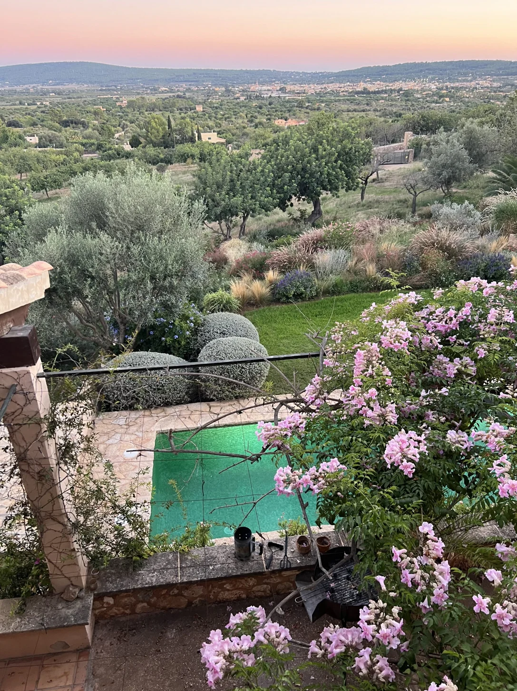

Et sted åbare være.

Det begynner
med en følelse.
Varmen fra solen. Roen i rommet.
Materialer du får lyst til å berøre.

Skjønnheten
ligger i detaljene.
Lokal sten. Tradisjonell terrakotta.
Overflater med sin egen karakter.

Plass til å
senke skuldrene.
Dørene står åpne mot hagen.
Her får dagene sitt eget tempo.

Fra natur.
Til rom.
Til minner.
Lange måltider. Gode samtaler.
Et sted å komme tilbake til.
Et hus å forelske
seg i.
I hjertet av Mallorca, omgitt av olivenlunder og med en vingård som nabo. Stenhuset er et autentisk tilfluktssted, bare 20 minutter fra Palma.
- Soverom
- 05
- Bad
- 04
- Til Palma
- 20min
- Eiendom
- 10mål, ca.


Fem soverom og fire bad, inkludert et eget anneks. Et stort kjøkken, spiseplass til åtte og en romslig, åpen stue. Plass til å være sammen — og trekke seg tilbake.
Send forespørsel om opphold
Tid til
ingenting.
En svømmetur. En plass i skyggen.
En dag uten andre planer.
Se deg rundt.
Alle fotografiene er fra Stenhuset på Mallorca.
Trykk på et bilde for å komme nærmere.
Dagene er
dine.
Huset og uteområdene
Huset er bygget i autentisk spansk stil, med lokal sten og tradisjonell terrakotta på gulvene. Ute finner du spiseplass med utsikt over lavendelhagen og oliventrærne, en lounge og et privat, grønt svømmebasseng.
Aktiviteter på Mallorca
To landeveissykler og en sykkel med kurv er tilgjengelige ved huset. Den populære sykkelruten i Orienten ligger i nærheten. Mallorca byr også på tennisbaner og Rafael Nadals tennisakademi.
Restauranter og Palma
Santa Maria har lokale restauranter med spansk mat. For mer byliv og uteliv ligger Palma omtrent 20 minutter unna.
Forespørsel og tilgjengelighet
Send ønskede datoer og antall gjester til info@stenhuset.no for tilbud. Tilgjengelighet og pris bekreftes av Stenhuset. Skjemaet nedenfor klargjør en e-post; det reserverer ikke oppholdet.
Ditt neste
kapittel.
Fortell oss når du vil komme, og hvem du vil dele oppholdet med.
info@stenhuset.no ↗